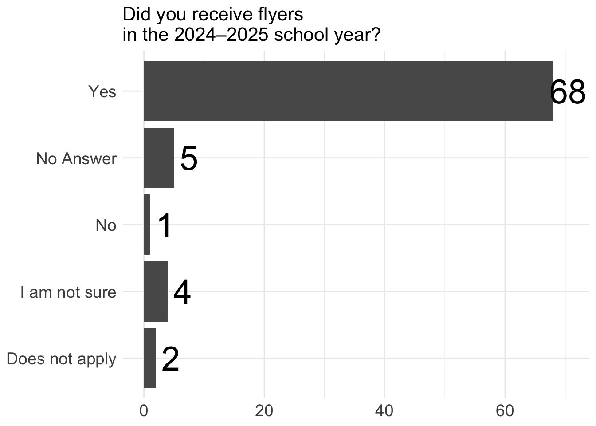
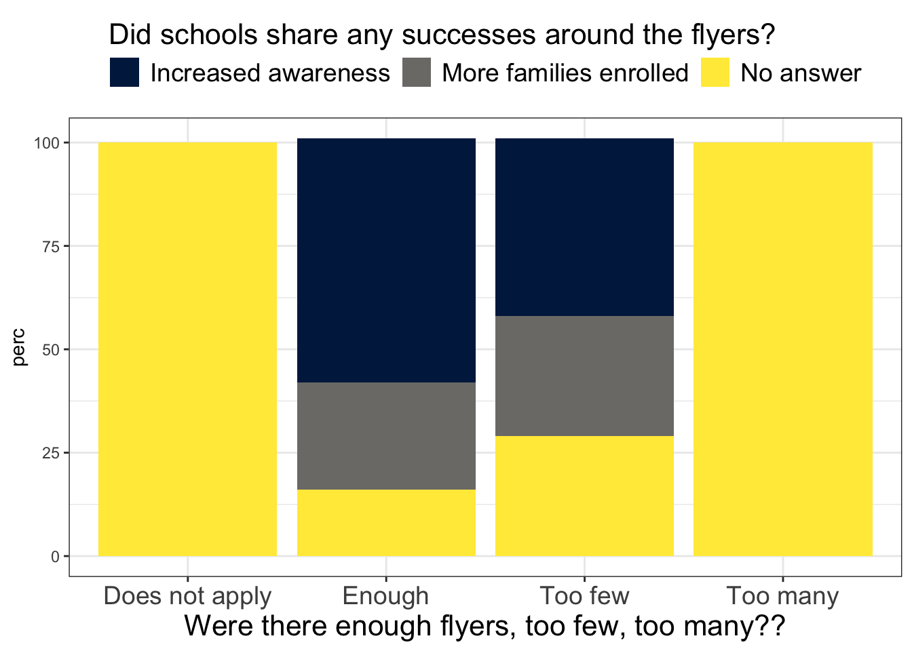
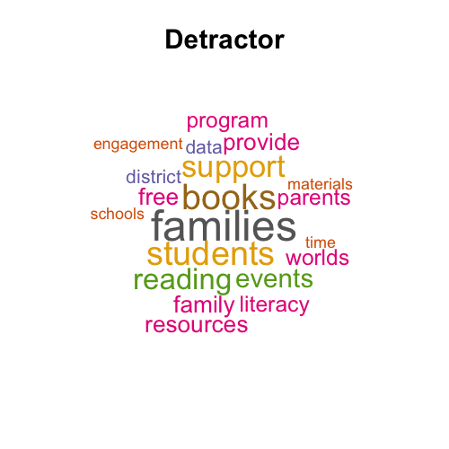
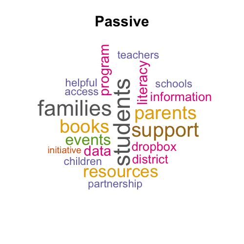
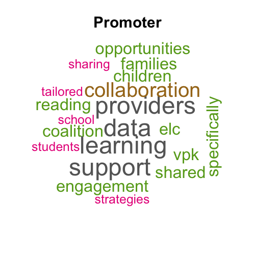

There was a total of 68 responders for the District POC survey. The overall NPS was 59 while the customer satisfaction rate was 87%.
The NPS for non ELC District POC was 57 and the customer satisfaction rate was 85%.
The NPS for ELCs was 80 and the customer satisfaction rate was 100%.
We considered responses of 8-10 for the NPS questions as satisfied customers and calculated the percentage of those selecting 8-10 as the customer satisfaction percentage.


We generated word cloud based for each NPS group (Promoters, Detractors, and Passives) using all the answers across questions 5, 6, 7. These questions were:
Question 5: We would love to hear more about why you rated your experience with us the way you did. What specific aspects influenced your rating?
Question 6: What do you like the most about New Worlds Reading and our partnership?
Question 7: What can we do to better serve you and/or families in your district?


